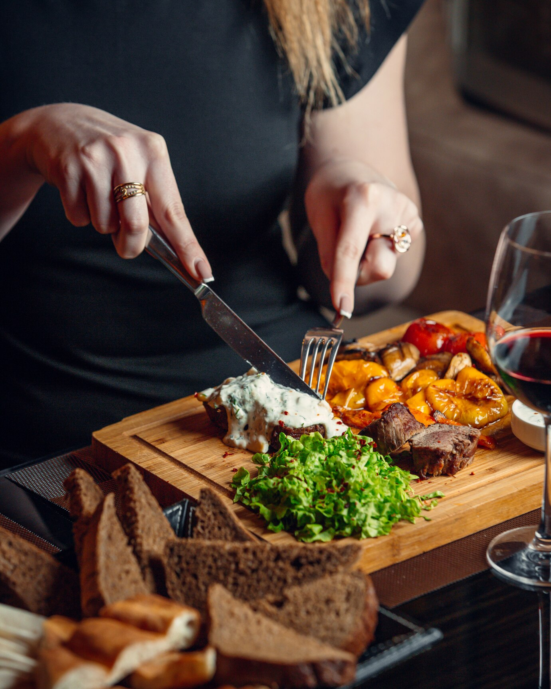
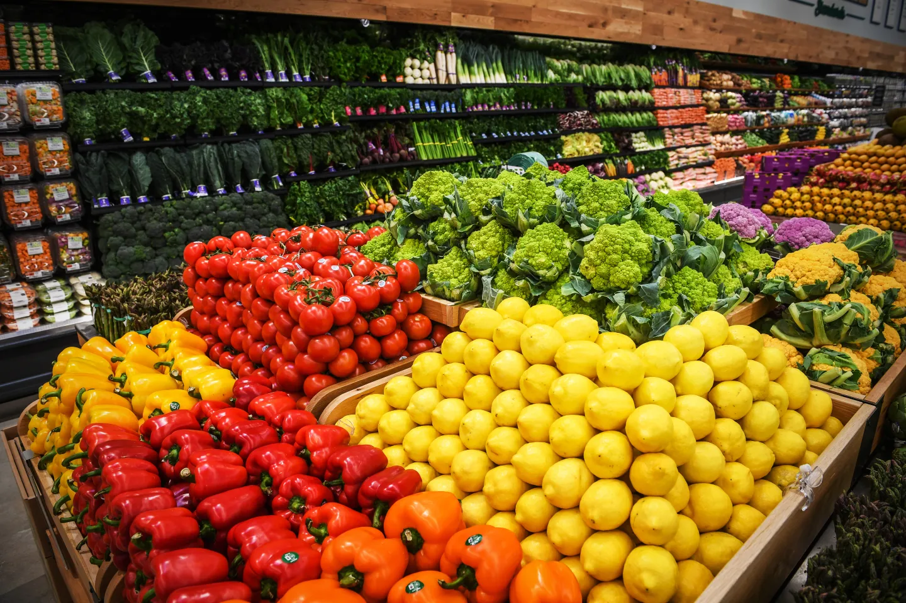

Explore Food Options in Taniti
Restaurants
Taniti currently has 10 restaurants: five serve mostly local fish and rice, three serve American-style meals, and two serve Pan-Asian cuisine. Whether you're craving fresh seafood, hearty American favorites, or flavorful Asian dishes, there's something for everyone on Taniti.
Local dishes often feature freshly caught fish, locally grown vegetables, and tropical fruits like papayas, mangoes, and pineapples. Many restaurants offer outdoor seating with views of the ocean, providing a perfect ambiance to enjoy your meal. For visitors interested in experiencing traditional Tanitian cuisine, the beachfront restaurants are a must-visit.
For a more casual dining experience, the Pan-Asian restaurants on the island are known for their unique fusion dishes, blending Tanitian flavors with influences from Thailand, Japan, and China. Don't miss the popular Tanitian noodle stir-fry, a local twist on a classic dish.
Grocery Stores
Taniti has two supermarkets, two smaller grocery stores, and one convenience store that is open 24 hours a day. These stores provide a range of essentials, from fresh produce and locally caught fish to imported goods for tourists and residents alike.
The supermarkets on the island carry a wide selection of fresh fruits, vegetables, and seafood sourced locally. They also stock international products to cater to tourists’ preferences. Whether you’re cooking a meal at your Airbnb or preparing for a picnic on the beach, these stores have everything you need.
For visitors who enjoy exploring local flavors, the smaller grocery stores offer specialty items like handmade jams, sauces, and snacks unique to Taniti. The 24/7 convenience store is perfect for quick late-night runs, offering essentials and ready-to-eat options.
Top Restaurants and Grocery Stores
- Ocean Bites: A beachfront restaurant specializing in fresh fish and rice dishes.
- Taniti BBQ Grill: Famous for its American-style burgers and steaks.
- Island Fusion: Offers Pan-Asian cuisine with a tropical twist.
- FreshMart Supermarket: A large store carrying fresh produce and imported goods.
- 24/7 MiniMart: The only convenience store open around the clock on the island.